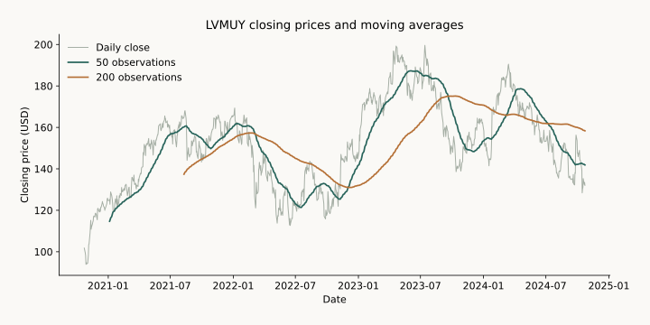
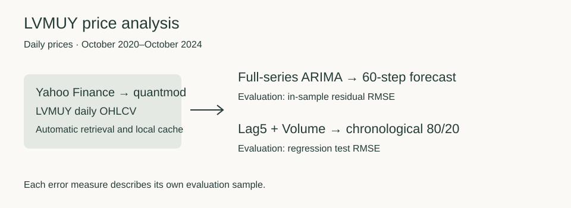

The research question
How do trend decomposition, moving averages, ARIMA and lagged-price regression characterize a stock-price series?
Data & methodology
Daily LVMUY prices for October 23, 2020 through October 23, 2024 are retrieved directly in R with quantmod::getSymbols() from Yahoo Finance. The repository includes the retrieval code, so manual CSV downloading is unnecessary.
- Applied classical decomposition with frequency 360 and 50/200-observation moving averages.
- Fit automatic ARIMA to the complete price series and generated a 60-step forecast.
- Fit Close ~ Lag5 + Volume using a chronological 80/20 partition and within-partition lag construction.
- Evaluated ARIMA residual fit and regression test error in their respective evaluation contexts.
What the evidence shows
The analysis combines long-run trend exploration with ARIMA forecasting and lagged regression. The code retrieves prices, runs both models and exports figures, predictions and explicitly labeled error measures.



Implications
The project provides a reproducible workflow for examining price trends and forecast behavior with R.
Evaluation boundaries
ARIMA residual RMSE and regression test RMSE use different samples, so they are not a common-holdout ranking. Same-day volume may be unavailable at a prospective forecast origin. Provider revisions can affect historical prices.
Explore the implementation
The repository contains source code, datasets or retrieval instructions, model results and execution instructions.
View Source Code on GitHub ↗